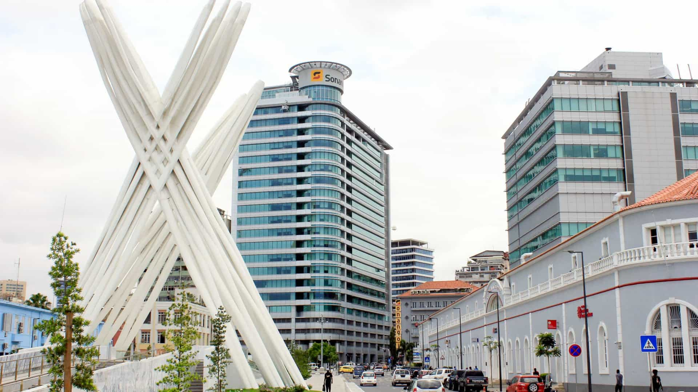

As Nossas Origens
Pouco antes da Independência de Angola foi criado um Grupo de Trabalho, no seio da indústria petrolífera, para apoiar esta mesma indústria e para mobilizar os angolanos que nela trabalhavam. O Grupo de Trabalho tinha como objectivo estabelecer uma estratégia que permitisse a continuação das actividades de exploração de produção de petróleo após a proclamação da independência. Posteriormente, o Grupo de Trabalho deu lugar à Comissão Nacional de Reestruturação da Indústria Petrolífera. Em 1976, a nacionalização da ANGOL Sociedade de Lubrificantes e Combustíveis, Sarl, dá origem à Sonangol e á Direcção Nacional de Petróleos que dependia do Ministério da Indústria. A ANGOL tinha sido constituída em 1953, como subsidiária da SACOR (companhia Portuguesa), para actuar na área da comercialização e distribuição de combustíveis, lubrificantes e gases liquefeitos em Angola.

O Decreto-lei Nº 52/76 estabeleceu a Sonangol - Sociedade Nacional de Combustíveis de Angola, U.E.E - como sendo uma empresa estatal vocacionada para gerir a exploração dos recursos de hidrocabonetos em Angola. No entanto, apesar de ter como único accionário o estado angolano, desde sempre a Sonangol é gerida como se fosse uma empresa privada sob padrões de desempenho rígidos de modo a assegurar total eficiência e produtividade. Logo a seguir à fundação da Sonangol, para a criação das infra-estruturas que assegurassem o bom funcionamento da Sonangol, foi constituída uma Comissão de Gestão a que se seguiu o Núcleo Central da Sonangol. Após a independência, várias companhias que operavam localmente abandonaram o país, deixando para trás as suas infra-estruturas e funcionários. Por esta razão, a Sonangol comprou as instalações da Texaco, Fina e da Shell e, fruto de um acordo, ficou com as da Mobil. No processo a Sonangol absorveu ainda os antigos trabalhadores dessas empresas petrolíferas que procuravam emprego. A escassez de recursos humanos qualificados na área de hidrocarbonetos levou a que a Sonangol apostasse na formação de quadros tendo o primeiro grupo de bolseiros partido para Itália, com o apoio da ENI - Grupo Italiano de Petróleos e o segundo para a Argélia. Estes estudantes regressaram ao país nos finais da década de 70, marcando a entrada da Sonangol numa nova era.
De uma empresa à Grupo
Atenta a novas oportunidades de negócios, a Sonangol cedo desenvolveu e criou parcerias para a implementação de unidades empresariais que contribuíssem para o desenvolvimento de Angola e para a expansão da própria Sonangol. Privilegiando os aspectos de gestão de recursos de hidrocarbonetos, preservação do meio ambiente e a segurança industrial, a Sonangol elaborou um sistema empresarial em torno do petróleo do qual fazem parte mais de 30 subsidiárias e empresas afiliadas. Com características de uma companhia de economia mista, a Sonangol expandiu as suas áreas de actividade e actualmente é uma empresa multinacional por mérito próprio. A Sonangol tem a sua sede na cidade de Luanda. A seguir apresentamos a presença da Sonangol no mundo:
- Cabo-Verde: Retalho de produtos refinados de petróleo bruto;
- São-Tomé e Príncipe: Distribuição e retalho de produtos refinados de petróleo bruto.
- Brasil: Exploração, desenvolvimento e produção de petróleo bruto;
- Estados Unidos da América: Exploração, desenvolvimento e produção de petróleo bruto, comercialização de petróleo bruto, transporte marítimo de petróleo bruto e LNG;
- Venezuela: Exploração, desenvolvimento e produção de petróleo bruto.
- Singapura: Comercialização de petróleo bruto;
- Hong Kong: Comercialização de petróleo bruto.
- Portugal: Refinação, distribuição e retalho de produtos refinados de petróleo bruto;
- Reino Unido: Comercialização de petróleo bruto.
A Sonangol ao longo de três décadas cresceu e tornou-se a empresa líder na distribuição de derivados no país e a maior promotora do desenvolvimento social e de recursos humanos nacionais. A razão para o sucesso da Sonangol está no desempenho das suas actividades com eficiência. O prestígio da Sonangol nos mercados interno e internacional é fruto do seu bom relacionamento com as companhias petrolíferas que operam em Angola ou com interesses e investimentos no país.
Cronologia
1976: Criação da Sonangol U.E.E.
-
1983: Fundação da primeira subsidiária internacional, a Sonangol Limited em Londres, Inglaterra.
1991: Adjudicação da primeira concessão em águas profundas, o Bloco 16.
1992: Criação da subsidiária Sonangol P&P como empresa petrolífera.
1999: A Sonangol muda de estatuto e passa de U.E.E. a E.P.
-
2003: A Sonangol tem-lhe atribuída a primeira concessão para prospecção e produção de hidrocarbonetos. O Bloco 03 na faixa Atlântica.
-
2005: A Distribuidora inicia a sua internacionalização com a abertura de postos de abastecimento em Portugal.
-
2008: Inauguração do novo prédio sede.
2009: Licenciamento de unidades de processamento da Refinaria do Lobito.
-
2011: Assinatura de contratos de partilha de produção dos Blocos do Pré-Sal em Angola.
-
2012: É feita a primeira descoberta de petróleo na camada pré-sal de Angola. As reservas do pré-sal estimadas em 30 mil milhões de barris.
-
2013: Angola faz a primeira entrega de Gás Natural Liquefeito.
2015: Angola comemora 57 anos de actividade de refinação através da Refinaria de Luanda.
2016: Inicia processo de reestruturação da Sonangol e é designado novo Conselho de Administração.
-
2018: Lançamento do Programa de Regeneração da Sonangol E.P.